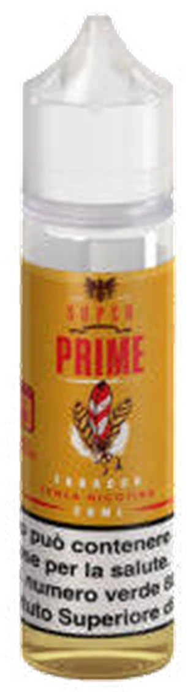

Liquidi, basi, aromi e ricambi da San Martino a Molassana
For Svapo ha negozi di sigarette elettroniche in Via San Martino 19r, Via Piacenza 83r, Via XX Settembre 87r e Via Molassana 55A r. Al banco: dispositivi, resistenze e ricambi, accessori, liquidi pronti, basi neutre e aromi da miscelare. [DA CONFERMARE elenco sedi]
18+ Vendita vietata ai minori di 18 anni. Questo sito ha scopo informativo sul negozio e non vende online.

Il flacone 3D è ricostruito dalla foto del Prime di Super Flavor (aroma tabacco, senza nicotina) fornita dal negozio.
02 — Al banco
Sette reparti, un banco solo
Le voci ricalcano l'oggetto sociale depositato da For Svapo S.r.l.s. in Camera di Commercio. Le singole referenze sono nel catalogo. [DA CONFERMARE]
| Cod. | Reparto | Cosa comprende |
|---|---|---|
| D-01 | Dispositivi | Sigarette elettroniche, kit e sistemi a pod. |
| R-02 | Ricambi | Resistenze, pod e cartucce di ricambio, vetri per atomizzatori. |
| A-03 | Accessori | Batterie, caricatori, cordini, custodie. |
| L-04 | Liquidi pronti | Flaconi pronti all'uso. Se contengono nicotina: massimo 10 ml a flacone e 20 mg/ml, per legge. |
| B-05 | Basi neutre | Glicole propilenico (PG) e glicerina vegetale (VG) in diverse proporzioni. |
| A-06 | Aromi | Aromi concentrati da diluire nella base, nelle percentuali indicate dal produttore. |
| T-07 | Telefonia | Accessori di telefonia generica. |
03 — Catalogo
Il catalogo, scheda per scheda
Apri una voce per leggerne la scheda. Il catalogo è informativo: non si acquista online, i prodotti si trovano nelle sedi. Prezzi e disponibilità si chiedono in negozio.
schede
-
AR-01Prime Super FlavorAroma scomposto · tabacco20 ml / 60 ml · 0 mg
- Marca
- Super Flavor [DA CONFERMARE]
- Famiglia
- Tabaccosi (Tb)
- Formato
- 20 ml di aroma in flacone da 60 ml
- Nicotina
- Senza nicotina, come indicato in etichetta
- Come si usa
- Aroma concentrato: non si usa puro, va portato a volume con base neutra seguendo le istruzioni del produttore
- Dove
- Chiedi nelle sedi [DA CONFERMARE disponibilità]
-
LQ-01Liquido pronto 10 ml referenza da indicareLiquido pronto10 ml
Scheda segnaposto: nome, marca, foto e gradazioni vanno forniti dal negozio. [DA CONFERMARE]
-
BS-01Base neutra PG/VG formati da indicareBase senza aromaPG/VG
Scheda segnaposto: rapporti PG/VG e formati disponibili. Per i dosaggi usa il miscelatore. [DA CONFERMARE]
-
DV-01Kit pod modello da indicareDispositivo—
Scheda segnaposto: modello, marca, batteria, foto. [DA CONFERMARE]
-
RC-01Resistenze e pod di ricambio compatibilità da indicareRicambio—
Scheda segnaposto: per quali dispositivi, valori in ohm, confezioni. [DA CONFERMARE]
-
AC-01Batterie e caricatori referenze da indicareAccessorio—
Scheda segnaposto: formati delle batterie, caricatori, custodie. [DA CONFERMARE]
Le voci segnate "da indicare" sono schede vuote pronte da compilare con l'assortimento reale.
04 — Tavola degli aromi
Nove famiglie, come gli elementi
Gli aromi si raggruppano per famiglia. Tocca un elemento per leggerne le note tipiche. Sono le famiglie del settore: le referenze disponibili stanno nel catalogo. [DA CONFERMARE assortimento]
Tabaccosi
Note secche, tostate, di foglia essiccata. Varianti con sfumature di miele, nocciola o caramello.
- Base tipica
- 50/50 PG/VG
- Note
- foglia · tostato · frutta secca
05 — Anatomia di un liquido
Quattro ingredienti in dieci millilitri
-
PG
Glicole propilenico
Liquido fluido e trasparente. Porta l'aroma e dà la sensazione in gola. Più PG, liquido più fluido.
-
VG
Glicerina vegetale
Più densa e leggermente dolce. Più VG, più vapore visibile e liquido più viscoso: serve una resistenza adatta.
-
Ar
Aroma
Concentrato da diluire nella base: di solito tra il 5 e il 20 per cento, secondo l'indicazione in etichetta.
-
Ni
Nicotina, se presente
Dichiarata in etichetta in mg/ml. La Direttiva 2014/40/UE fissa il massimo a 20 mg/ml e i flaconi con nicotina a 10 ml. La nicotina crea dipendenza.
06 — Miscelatore
Dosa la tua base, al millilitro
Scegli il formato, il rapporto PG/VG e la percentuale di aroma: il calcolo dice quanti millilitri di ogni componente servono. Solo basi neutre, senza nicotina.
Risultato
- Aroma
- ml
- PG
- ml
- VG
- ml
Il PG contenuto nell'aroma è conteggiato nella quota PG. Calcolo indicativo: segui sempre le istruzioni del produttore dell'aroma.
07 — Sedi e orari
Quattro fermate, dal centro alla Val Bisagno
Sedi ricavate da elenchi pubblici e annunci: indirizzi, telefoni e orari vanno confermati con For Svapo prima della pubblicazione. [DA CONFERMARE]
-
Centro
Via XX Settembre 87r
16121 Genova · Tel. 010 292 9262 [DA CONFERMARE]
Orari [DA CONFERMARE]
-
San Martino
Via San Martino 19r
16131 Genova · Tel. 010 455 2110 [DA CONFERMARE]
Orari [DA CONFERMARE] Lunedì 10:00 – 19:30 Martedì 10:00 – 19:30 Mercoledì 10:00 – 19:30 Giovedì 10:00 – 19:30 Venerdì 10:00 – 19:30 Sabato 10:00 – 19:30 Domenica chiuso -
Val Bisagno
Via Piacenza 83r
Genova · Tel. 010 099 7405 [DA CONFERMARE]
Orari [DA CONFERMARE]
-
Molassana
Via Molassana 55A r
16138 Genova · Tel. [DA CONFERMARE]
Orari [DA CONFERMARE]
La mappa carica contenuti da OpenStreetMap: il tuo indirizzo IP viene inviato ai loro server. Parte solo se lo chiedi tu.
Mappa © OpenStreetMap contributors · posizioni indicative [DA CONFERMARE]
- Info
- 389 172 9118 [DA CONFERMARE]
Le recensioni le scrivono i clienti: le trovi su Google, non le riportiamo qui.